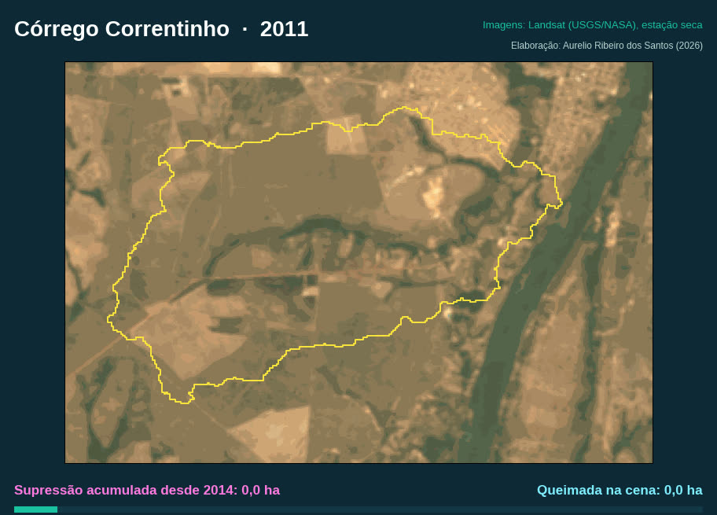

Microbacia do Córrego Correntinho · Miracema do Tocantins (TO)
Evolução da cobertura do solo, 2011 a 2026. Toque em Reproduzir ou arraste a barra para escolher o ano.

2011
Elaboração: Aurelio Ribeiro dos Santos (2026), Engenheiro Ambiental e Sanitarista, CREA-TO 309875 D. Imagens: Landsat (USGS/NASA), estação seca. Estudo ambiental elaborado para o Município de Miracema do Tocantins (SEMMA). Material técnico preliminar, sujeito à revisão do responsável.